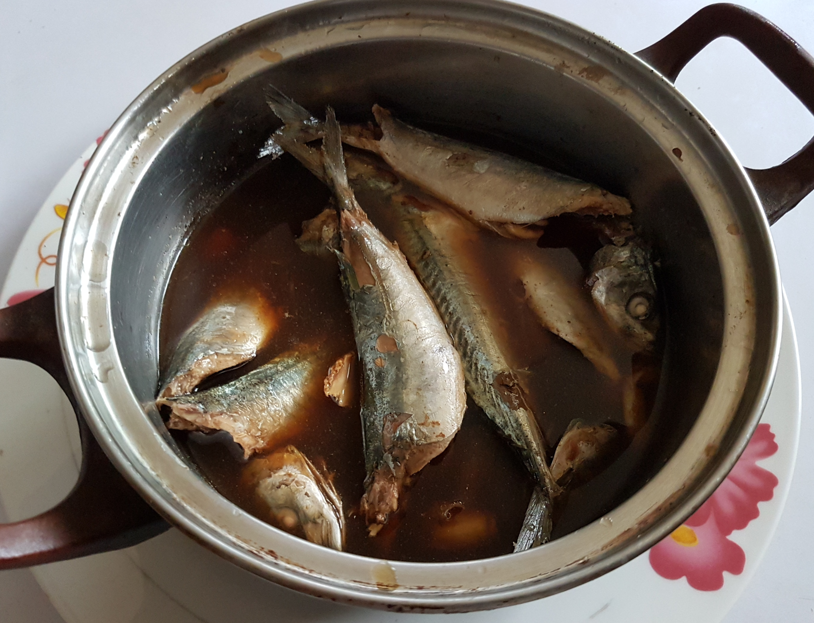

Paksiw which means "to cook and simmer in vinegar." Specifically paksiw na isda is fish poached in a vinegar broth usually seasoned with fish sauce and spiced with siling mahaba. It also usually includes vegetables, commonly eggplant and ampalaya (bitter melon).
Paksiw na isda is a quick and easy seafood dish that is said to be one of the most common everyday dishes prepared by Filipino families. Since the Philippines is a country composed of tropical islands, fish is a major staple.